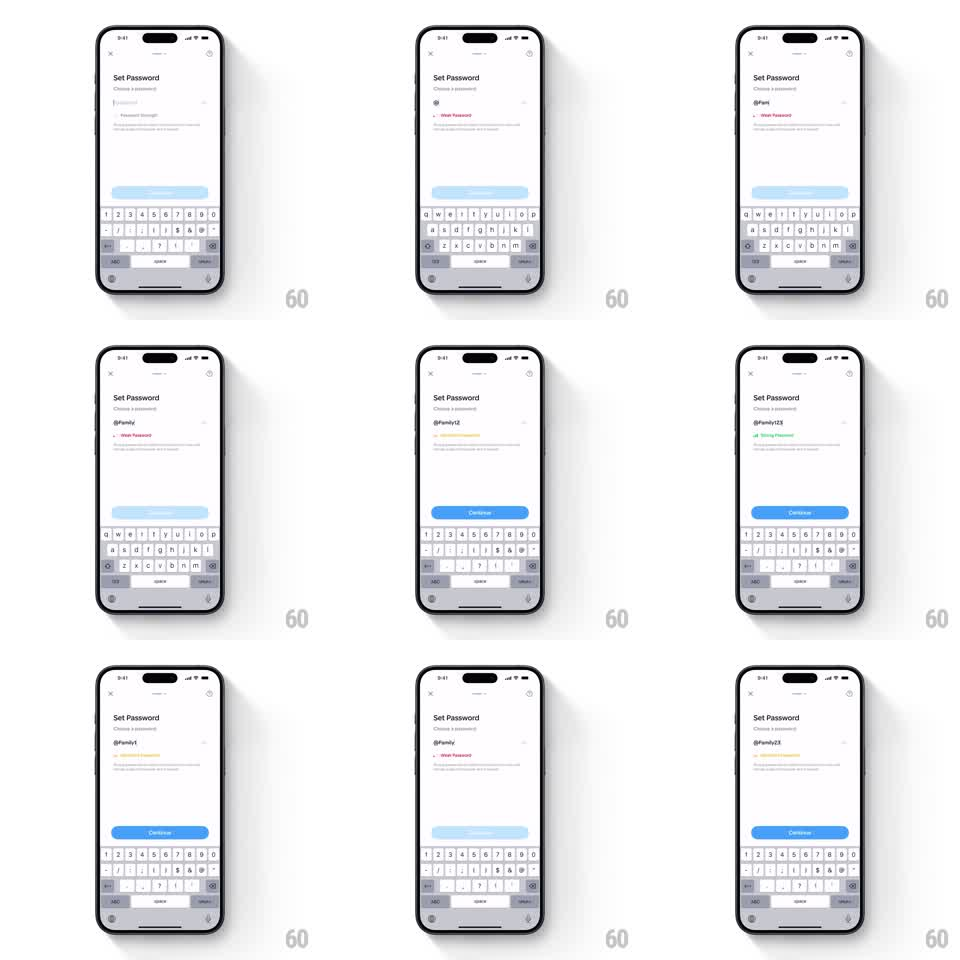

Media
Frame-by-frame

Rebuild this interaction 1:1: Family's password strength flow - on the light "Set Password" screen, typing "@Family123" grows a segmented strength bar through Weak (red) and Fair (yellow) to Strong (green), each label swapping under the field while the Continue button fills from light blue to solid blue only at Strong.

Rebuild this interaction 1:1: Family's password strength flow - on the light "Set Password" screen, typing "@Family123" grows a segmented strength bar through Weak (red) and Fair (yellow) to Strong (green), each label swapping under the field while the Continue button fills from light blue to solid blue only at Strong.
## Integration
Integration: stack-agnostic spec - springs given as stiffness/damping, timed motions as duration + curve; map every value to your framework and animation library of choice.
## Scene
Light "Set Password" screen: "Choose a password" subhead, password field (masked dots, eye toggle), a strength bar of segments under the field with a label ("Weak Password" red, "Fair Password" yellow, "Strong Password" green), hint text, keyboard up, and a bottom "Continue" pill (light blue disabled, solid blue enabled).
## Motion spec
Pattern: segmented meter fill with staged label and button states.
- Each keystroke: the field's dot pops in (scale 0.6 -> 1, 100ms) and the strength recomputes.
- Bar: segments fill left to right with a stretch (width spring ~300/20, 250ms) and recolor as a group (200ms crossfade): one red segment at Weak, two yellow at Fair, three green at Strong.
- Label: the old word slides up and fades (150ms) as the new word rises (spring ~320/18, 200ms) - Weak -> Fair -> Strong swaps are vertical text flips, same slot.
- Continue: disabled light blue until Strong, then fills to solid blue (200ms) with a subtle scale pulse (1 -> 1.02 -> 1, spring ~340/16).
- Deleting characters reverses stages with the same segment/label mechanics.
## Calibration
- The bar lives directly under the field - the eye reads field, bar, label as one unit.
- Color order is fixed: red, yellow, green; no other hues appear.
## Reduced motion
Bar fills and labels crossfade (150ms); no springs or pulses.
## Don't miss
- The eye toggle switches masked dots to plain text with a 150ms crossfade.
- Continue never enables at Fair - Strong is the gate.